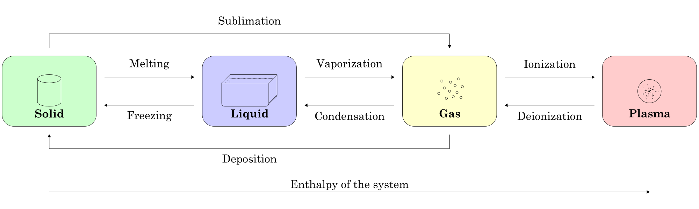

Topic 1
States of matter
Particles
Brownian Motion
Brownian motion is the random motion of particles due to being struck by other particles.
Difusion
This is the movement of particles from an area of higher concentration to an area of lower concentration until until they are evenly distributed.
What can affect the rate of diffusion in gasses?
The higher the temperature, the faster the gas will difuse. This is because the particles will possese a greater amount of energy to move further away in a shorter time period. The higher the relative molecular mass, the lower the gas will diffuse.
- Relative atomic mass
- Temperature
Atoms are the smallest particles that cannot be broken down furthur by chemical reactions.
Molecules are made up of two or more atoms chemically joined together.
Ions are groups of atoms that carry a charge
The different states
Solids - In a solid the particles are densely packed together such that particles remain in their fixed position but make small vibrations. Solids have a difinite shape, mass and a definite volume.
Liquid - When solids gain heat, the particles in the solid gain heat and begin to vibrate more resulting in the particles breaking down from their ordered structure and move around each other to exist in the liquid form. In a liquid, there is no definite shape but they do have a definite mass and volume.
Gasses - When a liquid gains heat, the particles gain more heat and vibrate fast enough to break free and exist as individual particles known as gas. In a gas, there is no definite shape, nor volume but there is a definite mass. Pressure in gases increase when heated in a closed environment or compressed. All gases can be compressed but solids and liquids cannot because their particles are already very close together.
Matter changes from solid to liqud to gas, however, when it changes its state from a solid state to gaseous state without going throug the liquid stage, the process is known as sublimation. The opposite change can occur when a gas changes its state into a solid. This process is known as deposition.
Pure substances
States of matter can be changed by heating or cooling. In a pure substance, there is a definete sharp boiling point and melting point.
For example, water will begin to change from it's liquid state to gaseous state at temperatures above 4 degrees celcius to exist as water vapour. However when water vapour reachers 100 degrees celcius, it is known as steam.
Different substances have differnet melting and boiling points. This is due to the forces of attraction inbetween the particles that hold them together. The stronger the force, the more energy is needed to change the state of a particle.
Mixtures solutons and solvents
Mixtures
A mixture is made up of two or more substances that are not chemically combined together and can be separated easily. To separate mixtures, we can use several techniques such as:Evaporation, Filtration, Distillation, Crystalisation and sometimes the use of magnets.
To separate two solids, you need to choose a solvent that can only dissolve one of the substances. For example, to separate salt and sand, you could use water but for something like salt and sugar, you could use ethanol as it dissolves sugar but not salt.
Solutions
Solutions form when a solute is dissolved in a solvent. To be considered a solution, the mixture has to be translucent and the solute has to be completely disolved in the solvent.
Solute(solid) + Solvent(liquid) = Solution
When a substance is unable to dissolve ina solvent, we say the substance is insoluble.
Conditions that affect solubilty
Temperature - the higher the temperature of the solvent, the more soluble the solute.
Stirring - The faster the rate of stirring, the faster the rate of dissolving
Size - The larger the size of the solutw, the slower it will dissolve.
Saturation of solution - The more saturated a solution is, the slower the rate of dissolving.
Separation methods
Simple distilation - This is used to obtain a solvent from a solution.
- Heat Solution in flask. As the solution boils, the solvent evaoprates into the liebig condenser leaving the solute behind.
- Water in the liebig condenser cools the evaporated solvent and causes it condense.
- The solvent slowly drips into the beaker, separating the solvent from the solute.
Fractional distillition - This can be used to separate a mixture of different liquids.
We will use Ethanol and Water for this example. The two liquids have different boiling points : Ethanol - 78 degrees celsius, Water - 100 degrees celsius.
- Heat the mixture to about 78 degrees where ethanol would begin to boil. This causes the ethanol and water vapours to rise up the column.
- The vapours will then condense on the glass beads making them hot. When the beads reach 78 degrees, the water vapour no longer condenses on the glass beads, only water vapour does and drips back into the flask.
- The ethanol vapour goes into the liebig condenser
- There it condenses and pure liquid ethanol drips into the beaker.
- Control the heat to maintain a constant heat of 78 degrees.
- When the beads rises significantly above 78 degrees, all the liquid ethanol would have been evaporated and collected as liquid ethanol.
Paper chromatography - It is used to separate a mixture of substances, identify a substance or purify a substance, by separating it from its impurities.
- Place a drop of the dye in the center of chromatography paper and let it dry.
- Add more drops in the same spot to increase the concentration of the dye.
- Drip water onto the ink/dye spot one drop at a time. The ink would begin to spread out from the center, forming rings. Each ring would be made up o different colours.
- The dyes have different solubility so travel across the paper at different rates. The more soluble a dye is, the faster it will travel.
Paper chromatography can be used to identify substances. From this we can find their RF value. The RF value = Distance moved by dye / distance moved by solvent.
If if substance in a mixture is colourless, You can use a locating agent to make it show up.
Atoms and elements
Atoms are the smallest particles of matter, that we cannot break down further by chemical means
An element contains only one kind of atom.
The periodic table and how to use it
The middle section of the periodic table contain all the metal elements. The rest are non-metals. The columns are called groups and the rows are called periods. The groups show the amount of electrons in the outer shell. for example, take lithium:
Every atom has an equal nmber of protons and electrons, so atoms have no overall charge. The total number of neutrons and protons in the nucleus of an atom is called the nucleon number. \n here are the atoms of the first 10 elements:
| Element | Symbol | Proton Number | Electrons | Neutrons | Nucleon Number |
|---|---|---|---|---|---|
| hydrogen | H | 1 | 1 | 0 | 1 |
| helium/td> | He | 2 | 2 | 2 | 4 |
| lithium | Li | 3 | 3 | 4 | 7 |
| berylium | Be | 4 | 4 | 5 | 9 |
| boron | B | 5 | 5 | 6 | 11 |
| carbon | C | 6 | 6 | 6 | 12 |
| nitrogen | N | 7 | 7 | 7 | 14 |
| oxygen | O | 8 | 8 | 8 | 16 |
| fluorine | F | 9 | 9 | 10 | 19 |
| neon | Ne | 10 | 10 | 10 | 20 |
| 100.00 | |||||
Isotopes and radioactivity
Isotopes are atoms of the same element which have the same proton number but differnt nucleon number. In other words, a different number of neutrons.\n
Some isotopes are radioactive. This means that the nucleus is unstable. This eventually leads to the decay of the atom which gives off radiation (rays and particles + a large amount of energy). Radioactive isotopes are also called radioisotopes.
Uses for radioisotopes
Radioisotopes can be used for smoke detecting, treating cancer in use of radio therapy, or to kill germas and bacteria. It can also be used for carbon dating.
Arrangement of Electrons
Electrons are arranged in shells around the nucleus. The energy levels are higher the further a shell is from the nucleus.
As mentioned above, the group number tells you the number of outer shell electrons, whilst the period tells you the number of shells.
Metals and non-metals
| Properties of Metals | Properties of non-metals | ||||
|---|---|---|---|---|---|
| hydrogen | H | 1 | 1 | 0 | 1 |
| Nothing | Vis ac commodo adipiscing arcu aliquet. | 19.99 | |||
| Something | Morbi faucibus arcu accumsan lorem. | 29.99 | |||
| Nothing | Vitae integer tempus condimentum. | 19.99 | |||
| Something | Ante turpis integer aliquet porttitor. | 29.99 | |||
| 100.00 | |||||
Exception
...
Compounds, mixtures and chemical change
Compounds
A compound is described by its formula.
Signs of chemical change
- One or more new chemical substances is formed.
- Energy is taken in or given out during the reaction
- Change is usually difficult to reverse
Why do atoms form bonds?
Atoms form bonds due to the fact that most atoms do not have a full outer shell (consisting of 8 electrons) and are unstable and very reactive. To fix this, atoms bond to gain atoms, lose atoms or share atoms to gain a full outer shell. There are three types of bonds made between atoms: covalent bonds, ionic bonds and metallic bonds.
Covalent bonds
Covalent bonds are formed between two or more non-metal atoms where they share electrons to gain a full outer shell. For instance take hydrogen and nitrogen:Hydrogen has one electron in its outer shell and needs one more to fill it up. Nitrogen has five electrons in its outer shell and needs three more to fill it up. In order for both atoms to have a full outer shell, they need to share electrons, because hydrogen can only share one electron, nitrogen needs to bond with three hydrogen atoms. This is the result:
Ethene AmmoniaAnother example is ethene. It consists of two types of atoms, carbon and hydrogen. Hydrogen, as mentioned above, has one electron in its outer shell and needs one more to complete it. Carbon has four electrons in its outer shell and needs four more to fill its outer shell. One carbon atom shares two electrons with two hydrogen atoms and two and two electrons with another carbon atom. DiamondThe examples above are examples of a simple molecular structure. However, covalent bonds can also form giant covalent structures. These are formed when millions of atoms are joined together by covalent bonding. One example of this is diamonds. In diamonds, each carbon atom is connected to four other carbon atoms. They form a tetrahedral shape, which forms a giant covalent structure also known as macromolecules.
Ionic bonds
Ionic bonds are formed between metal and non-metal atoms. Theses bonds are formed when metal atoms lose atoms and non-metal atoms gain electrons. These ions form a lattice structure and produce no overall charge. An example of this is magnesium oxide: The magnesium loses two electrons, giving it to the oxygen atom, which gains two electrons causing the atoms to both have a full outer shell and an ionic bond. The result is below:
Metallic bonding
Metallic bonds are the connection between metal ions and free electrons. An example is copper, the copper ions are held together by the free or delocalized electrons between them.
Properties
Properties of covalent compounds: For simple molecular structures:
- They have a low melting point and a low boiling point.
- Intermolecular forces are very weak
- Melting does not separate covalent bonds
- High melting and boiling point due to the fact that there needs to be a lot of energy to break each covalent bond.
Properties of ionic compounds:
- High melting point and high boiling point
- Usually has high solubility in water
- Conducts electricity when dissolved or melted in water
Properties of Metallic Compounds:
- High melting point and high boiling point (except for mercury which is liquid at room temperature)
- Malleable and ductile. Malleability is the ability to be hammered into a shape; ductility is the ability to drawn out into wires.
- Metallic compounds can be hammered into shape or stretched into wires because of the way the atoms are aligned in rows and can slide past each other without breaking the metallic bond.
- Good conductors of heat and electricity.